Hello! I am
ARMANDO MANCILLA
I am a physics student with an interest in complex systems and data science. Here are some of the projects I've worked on. Welcome to
My Portfolio


Hello! I am
I am a physics student with an interest in complex systems and data science. Here are some of the projects I've worked on. Welcome to
During the COVID-19 pandemic, daily infection cases were processed and reported through public
databases by CONACYT. For privacy reasons, I cannot disclose all the details about the Epidemic
Models we implemented. However, I can provide an overview of some of the preparations required for
the later analysis, including the data cleaning process and infected waves identification.
This project was developed completely in Jupyter Notebook (Python), reading and processing the data
using Pandas and Numpy libraries. The analysis and model implementation was done using the
Scipy library, and the visualization was done using Matplotlib.
We can study the COVID-19 Pandemic in Mexico from the perspective of individual infection waves. The data was obtained from a CONACYT CSV database, including national and state data. This raw data includes details that difficult its read and process, given that it was provided by multiple medical institutions. One of the main problems we found is on weekends, where the values tend to be lower due to these places working with reduced capacities. For this, I proposed a plan for the cleaning, understanding the causes for the anomalies, and created a function that helps us automate this process for this particular database.
With the cleaned data, we can start the identification of the specific waves in the pandemic. This process has to be done manually but, thanks to the derivative, we can make it easier by identifying the places where the derivative is zero, some of which will correspond to the peaks of the waves. And after delimiting the times where we measure each wave, and displaying the defunctions, we can get a more complete picture of our phenomenon.
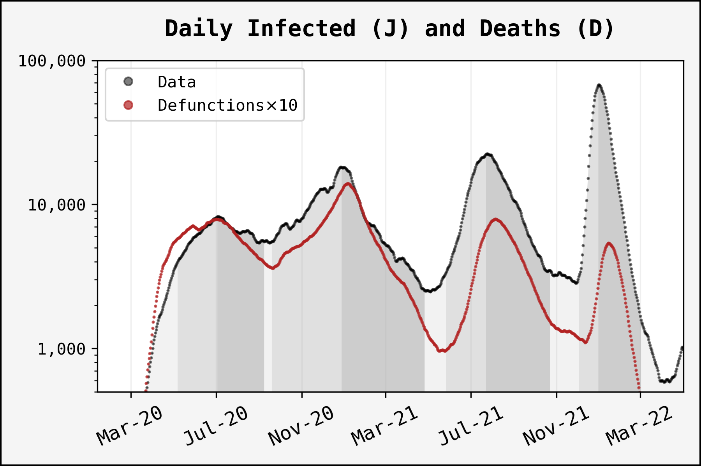The same method can be applied to the state data, but by doing so, we have to consider that the number of cases is much lower than the national data. This means that the fluctuations are more pronounced and the anomalies are harder to detect. We can use the same criteria as before, but we have to be careful with the tolerance factor, since it can lead to difficulties in the model application. In this case, we will focus exclusively on the state data of the most populous regions in Mexico.

You can consult the programs in my GitHub repository.
In this project, we study the Random Walk (defined simply as a succession of random steps) in a discrete lattice, through the distribution of final positions (its x position at a time t), or the distribution of the visits (all the positions in its path), as well as the statistical properties of these distribution: variance, skewness, kurtosis. We consider, aside from the simple random walk, two models:
For a better performance, I designed all the simulation for the different cases of random walks in Fortran, using the OMP Library, measuring the distribution of various walker realizations and the statistical properties we will later analyze. The results are then processed and displayed in a Jupyter Notebook. Here, I plan to show the results of the simulations, as well as some of the theoretical background (a lot of text!).
The Random Walk is a widespread concept, pilar in many topics related to stochastic processes.
It consists of a series of random steps or decisions, and based on it, there are multiple ways in
which we can create diversified dynamics.
This project was thought to serve as the fundaments to understand Random Walk theory and codding, to
ease the later development of models based on random walkers. This section assembles the results
provided by the Fortran codes simulations, as well as giving some analytical background.
The results of this project are based mainly on Probability Density Functions (PDFs), and on the analysis of the statistical moments, unique properties of each distribution. There are a few concepts we need to discuss to get a better understanding of the following sections. We can define the raw moments of any variable z as
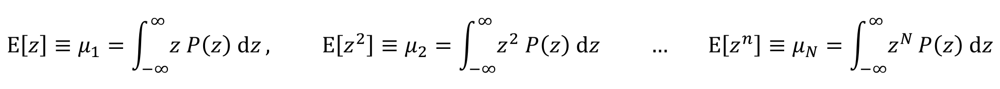Properties such as the variance, skewness and kurtosis are statistical moments calculated from the raw moments.
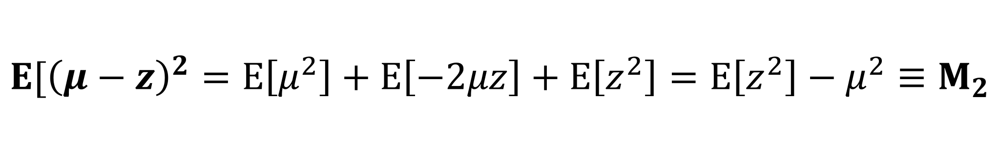
And the same goes for the following moments. In combination with these two, as long as we have an
analytical PDF, we can try to calculate the statistical moments as well.
Inside the simulation, we have to consider discrete quantities, and the numerical calculation of raw
moments obeys the following formula:
It is obvious to notice that this is just an average over the number of realizations
m. In our simulations, z corresponds to
the final positions.
We should discuss a little more about the meaning of the statistical moments. These are quantities that
showcase certain aspects of a Probability Distribution, we can even think of them as customized
identifiers. The first one, the mean value, Μ1, represents
a point that indicates the central tendency of the data, for symmetrical distributions, this lies on their
axis of symmetry. In the context of Random Walks, this is usually 0. The
next one is the variance, Μ2, indicating how far the data
is scattered around the mean. In this topic, it can actually give us information about the final positions
that walkers can reach, and what kind of dynamics their paths will follow. The third moment is pretty
straightforward, it is called skewness, Μ3, and its value
measures the symmetry of a distribution, if 0, the distribution is
symmetric, if negative, it is skewed to the left, and if positive, it is skewed to the right. Finally,
the fourth moment, the kurtosis, Μ4, refers to the form of
the distribution, specifically the form of its tails. The higher the kurtosis, the wider the tails, and
for lower values the majority of the data is concentrated around the mean, with small tails. For reference,
the kurtosis of the normal distribution is 3.
There is a technical aspect that we have to consider to measure a distribution of random walker's positions, this is the possible final positions. To have a better idea, let's think about a random walk with 3 steps starting from 0: the first step, the walker can only be at -1 or +1, zero is not part of these options. In the second step, the walker can be at -2,0,+2 , and we are starting to notice a pattern. In the final step, the trend is more visible, since the possible final positions of the walker are -3,-1,+1,+3. Therefore, we see that the final position of the walker, in a discrete lattice, is dependent on the number of steps being odd or even, and a distribution measure under these circumstances would have gaps, depending on the number of steps. To counter this effect, at the final time, where we intend to measure the final positions, we only update half of the walkers, so that half of the final positions are odd and half are even numbers.
Before diving into the theory behind random walks, I want to briefly discuss the most general details about these processes. Starting from the simple case of the random walk. We can define it just as a sequence of random steps, and visualize it by the sum of all the steps, let us name it X:

And, of course, the final value for X depends on the number of steps
n.
To make it easier to understand and study, these random steps can only be either
+1 or -1, both of them chosen with a
probability of 1/2. This can be thought of as a walker that can go
up or down.
If instead of two choices (+1,-1), we could make the walker return to the start, X0, with a probability γ = 1/10, that is, made it reset about every 10 steps, then we would have what we called the random walk with resetting. Later on, we will see how this affects the simple walk dynamics, but I can tell you now that it will keep it closer to this position X0.

Now, if the relocation of the walker is done not to its initial position, but instead to one of the
positions it has previously visited, we are allowing our walker to have memory. With this, the
places it visits the most have more chances of being chosen when it jumps. This dynamic is implemented
with a probability γ.
To visualize this, we do a random walk simulation with memory before actually showing it, so the walker
we display has an existing distribution of visits beforehand.
In both discrete time and space, such as we saw in the Individual Random Walks, the probability of finding the walker in the position x at a given step n is defined by the evolution equation
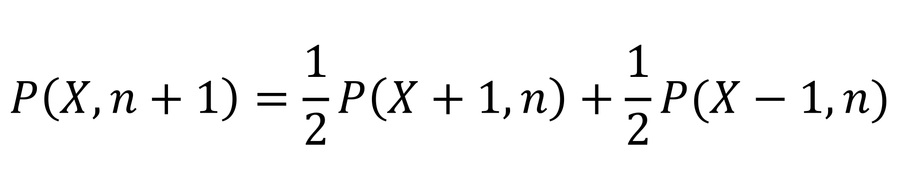However, we aim to study the random walk behavior in the continuous regime, for this, we need to consider the finite differences approximations to obtain a Partial Differential Equation:

With this approximation, we change to the continuous variables x,t, and with some algebra, the equation that describes the Probability evolution becomes
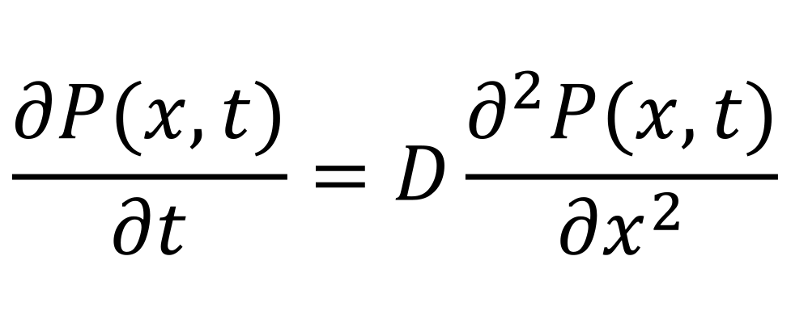with D = 1/2. This is the Diffusion Equation, unsurprisingly for diffusive particles as one can think random walkers to be.
The solution to the Diffusion equation is obtained by doing a variable change, using the Fourier transform: P (k,t) = ∫ P(x,t) exp(-ikx) dx. The result is a Gaussian function:

Here, we get some early results by comparing this to the normal distribution, for instance, the mean value is Μ1 = x0 (0 in our case), and the variance is Μ2 = 2Dt. In the results, this function is a distribution of Final Positions, that is, the position where a walker can be found after a time t.

The rest of the statistical properties can be calculated from this function. Not surprisingly, for a symmetrical distribution, the skewness results in Μ3 = 0, and the kurtosis is that of the Gaussian Distribution, Μ4 = 3.

All the simulation results follow a similar behavior to a Gaussian, only differing from each other in the variance which increases linearly with time. Nevertheless, the statistical moments measured at equal times are the same. As we mentioned before, the kurtosis clearly indicates a distribution close to a Gaussian.
There is another type of distribution that collects all the information about the walkers' path. Instead of looking solely at the final positions, we can keep track of the visits the walkers pay to the positions. In a mathematical sense, this is similar to stacking all the distributions of final positions for different times, up to the time t.
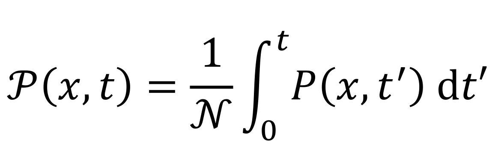with 𝒩 being the normalization constant. For the simple random walk, the integral yields

Here, erfc() is the complementary error function. In this case,
the values of the statistical moments are not so intuitive, but they can be calculated with the PDF.
The variance is just half of what we expect for the final positions,
Μ2 = Dt. The kurtosis now has a value of
Μ4 = 4, meaning more values are concentrated around
the mean, naturally for the measurement of visits.
There is a change in how we measure the statistical moments, related to the normalization. When we only
count the final positions of the walkers, to average the moments we just divide over the number of
realizations m
(Introduction). However, by taking into account all the
visits, we should also average over time:
Because of this condition, in the simulations, all realizations must be done at once, instead of starting the next one once the current is finished.

In the resetting case, a random walker not only hops to neighbor positions, but it has a probability γ of returning to its initial position x0. This limits the diffusion of the walker, that is how big the range of possible final positions is.

We can find a partial differential equation that describes the evolution of the PDF for the resetting case. Beginning from the Diffusion Equation, which defines the simple random walk dynamics, we use two new terms that implement the resetting. When a walker is reset, with probability γ, the PDF loses a flux of probability in the position x that gets added to the initial position of the walker x0 , represented as a δ function (Evans M. & Majumdar S., 2011).
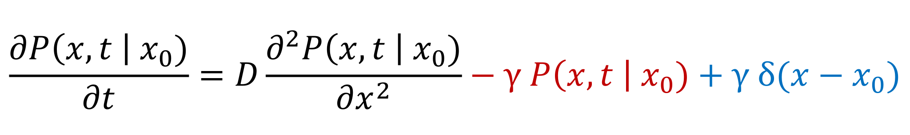In this case, the diffusion constant D, is not the same as for the simple random walk. Empirically, we found that D = (1 - γ)/2.
This can be reduced to a stationary equation that becomes a non-homogeneous Ordinary Differential Equation. After solving this new equation, we obtain a time-independent solution.
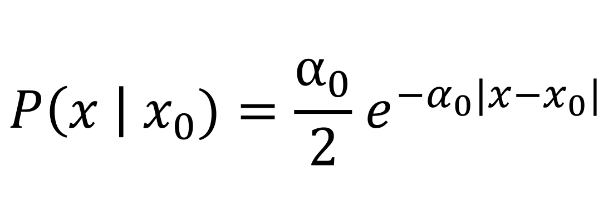with α0 = √2γ/(1 - γ). In the same line, using the stationary solution we can obtain some results for the moments. For instance, the variance, also time-independent, has a value of Μ2 = (1 - γ)/γ . The kurtosis shows a high value of Μ4 = 6, regardless of the resetting probability, indicating larger tails for these distributions.
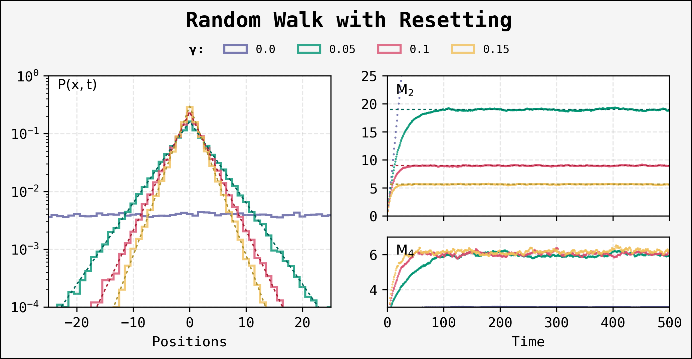The resetting is one of the most remarkable models of the random walk. The variance indicates the existent difficulty to reach new positions, and we could even think walkers are caged inside a specific range.
Something interesting happens when we try to find the PDF for the visits. If we use our stationary solution we get the same result, as its independence of time yields t as both the result of the integral and the normalization constant, thus nullifying. And the simulations suggest there is not a big change in the dynamics.

By looking at the distribution and the statistical properties, we can see that this case is close to time-independent. Why "close"? The small amount of data in the final positions, in comparison with the visits, gives us a variance result that might not show the full picture. Here, the kurtosis and the PDF are the same as before, but there is a difference in the variance produced by a better resolution of data. This new perspective indicates an asymptotic behavior that tends to the value we calculated theoretically using the stationary solution, but the stochastic effects on the resetting dynamics, that is, the probability of resetting, allows walkers to get to new positions with enough time.
This case also allows walkers' relocation besides the normal step, but instead of placing the walker in a defined position, this is chosen according to a probability distribution of all the visited sites up to that point. Meaning that the walker has memory of the places it has been to.
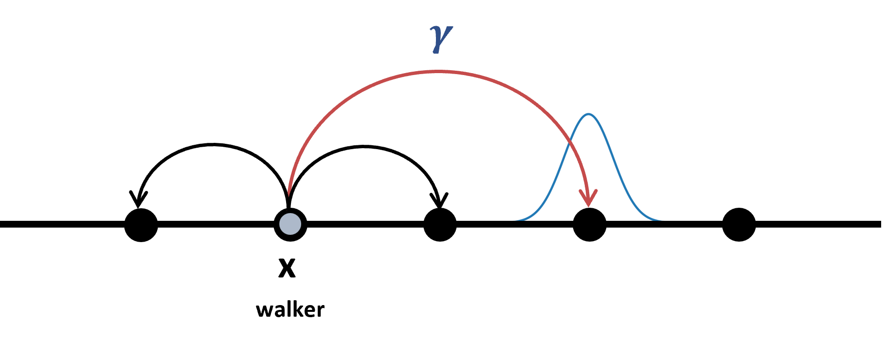We can write a differential equation for this case, similar to resetting. In the same sense, we have a negative flux of probability coming out of the x position, however, this is added into a term that represents the visits distribution instead of a single position (Boyer D. & Solis-Salas C., 2014).

We cannot get an analytical expression for the PDF, nevertheless, we can turn the last equation incognita into the second moment, only time-dependent. This is done by applying the definition of the statistical moments we discussed at the beginning of this document in the Introduction section; after which we apply a time derivative to remove the integral.
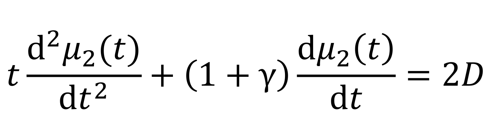Due to the symmetrical nature of the phenomenon, one can anticipate the average to be zero, thus we can assume the solution to apply to the variance Μ2:
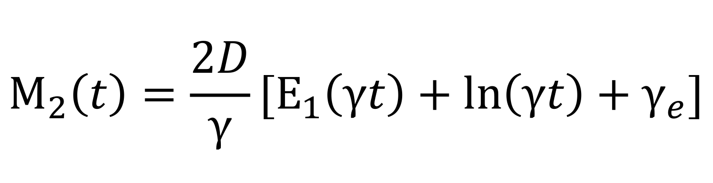Here, E1 is an Exponential Integral function and γe is the Euler's constant. We can try to make an approximation to the simulated PDF by using the Gaussian equation, changing the variance for the value of Μ2(t) in the last step, only for comparison reasons.

We see that, although the walkers positions are constrained around the 0, the variance is not as slow as in the resetting case. Even though we could think the distribution coincides with a Gaussian, the kurtosis clearly indicates something different, and the approximation we proposed ends up backing this argument, as the tails grow larger than those from a Gaussian.
This is an extension of what we have seen about the visits distributions. However, given that we do not know the PDF for the final positions of a random walk with memory, we also have no information about the PDF for the visits. Unlike the relation between the PDF in the visits and in the final positions, there is no connection between the variances of these cases.
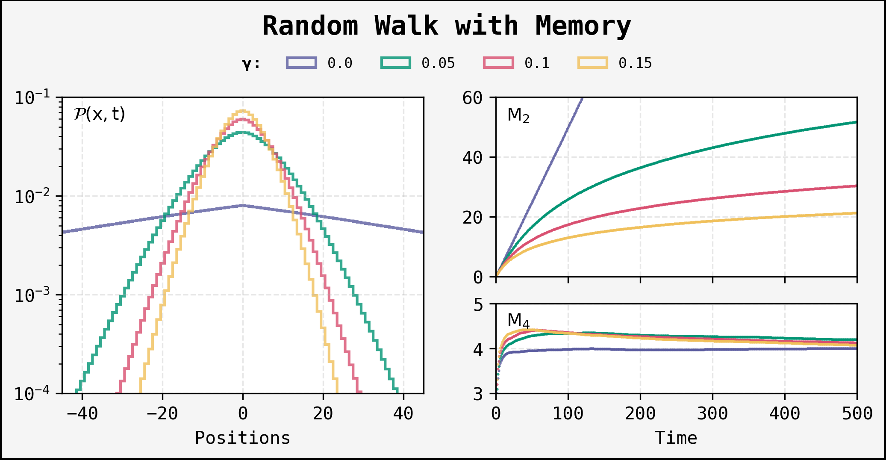You can consult the programs in my GitHub repository.
This is a project I made in my Professional Practices, designed to be an illustrative simulation of a gas made of Hard Spheres for Statistical Mechanics courses, under the supervision and direction of Dr. Thomas Gorin. The program is inspired by the 1953 article: Equation of State Calculations by Fast Computing Machines, by Metropolis N. et al.The program presented here is a demo for privacy reasons. The program is a User Interface console-based created in SciLab (a free sofware alternative to MATLAB), where the user can modify the parameters of the simulation.
The Metropolis algorithm is a Monte Carlo method used to sample from a probability distribution. Unlike the Monte Carlo method, the change in the state of the system allows us to have more resolution due to the distribution samples. The algorithm is based on the idea of accepting or rejecting a new state based on the energy difference between the current and new state. As a result, for systems with a large number of particles, the Metropolis algorithm is a powerful tool for simulating thermodynamic systems with a more flexible particle size.


This simulation aims to calculate a variable related to the state equation of the system, PV/NkT - 1, as a function of A/A0 - 1, a control parameter that relates the space occupied by the particles and the box area. The following is a comparison between the results achieved by both methods.

You can consult the programs in my GitHub repository.
This project is still a work in progress, but some features are polished enough. The annihilation is a process that occurs when two random walkers are removed from the system when they encounter each other. We use a ring configuration of discrete nodes to easily measure the concentration of the walkers at any time (#walkers/#nodes). There are two ways in which we can update the position of the walkers, and they will shape the behavior of the results:
We study the evolution of the concentration variable, measured every MonteCarlo Step (MCS), that is,
after n iterations, with n
being the number of nodes. We can look at other variables as the distribution of the nearest neighbor
distance, which is defined as the number of nodes that separates two contiguous walkers.
The simulation is done in a 1D ring, as a lattice with periodic boundary conditions. The walkers are placed randomly
on the nodes, and the annihilation is done when two walkers are on the same node. The simulations are
developed in Fortran, using the OMP Library, and the results are shown in a Jupyter
Notebook.
The type of update we choose to change the walkers' positions is important, as it will affect the behavior of the concentration. To understand this, let's discuss the two cases separately. For starters, in the Asynchronous update, we select a node randomly, and if there is a walker on it, we update its position, and if there is another walker on the new position, we remove both of them. This means that the annihilation only depends on one walker's movement. We repeat this process a number of n (number of nodes) times to complete one MonteCarlo Step (MCS). Now, the Synchronous update is a little bit more complex, and it is worth showing a diagram to explain it:
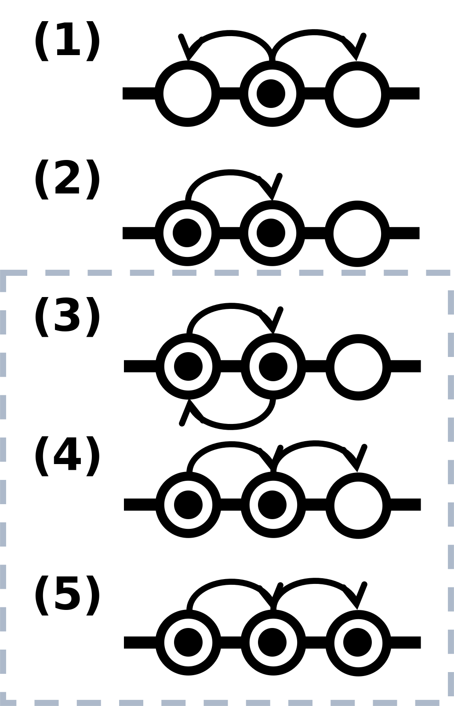In the synchronous update, we go node by node, and if there is a walker on it, we have different situations. In the first scenario, there is no walker in the new position, so we just move it. In the second case, there is a walker on the new position, and we have to check the following conditions (3-5). As we have a 1D ring, the walkers cannot interchange positions, and if they move in opposite directions, they will be annihilated. If both move in the same direction and they don't encounter a third walker, they will survive. And, finally, if instead there does exist a third walker, the first one will survive, and we have to check the conditions again for the last pair.
The results of the simulations for large systems, with 4,000 nodes and 2,000 walkers (50% of initial occupancy), are shown below.

At the beginning, the concentration decay differs for both cases, probably due to the extra diffusion provided by the random selection of the nodes in the Asynchronous update. We can get a better insight of the behavior of the concentration by looking at the distribution of the nearest neighbor distance. This is defined as the number of nodes that separates two contiguous walkers. The distribution is shown below:
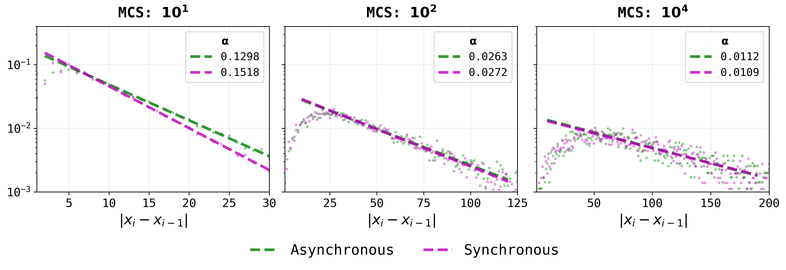At a time like t = 10 MCS, we can see that the Synchronous update has a higher probability of having a walker close to another one, as the distribution is shifted to the left. This would indicate lower annihilation rates, in contrast to the Asynchronous update, however, after a few more MCS, both distributions follow the same trend.
You can consult the programs in my GitHub repository.
Feel free to contact me. Follow my work on LinkedIn or send me an email to armando.mancilla.b@gmail.com
© Armando Mancilla, 2025